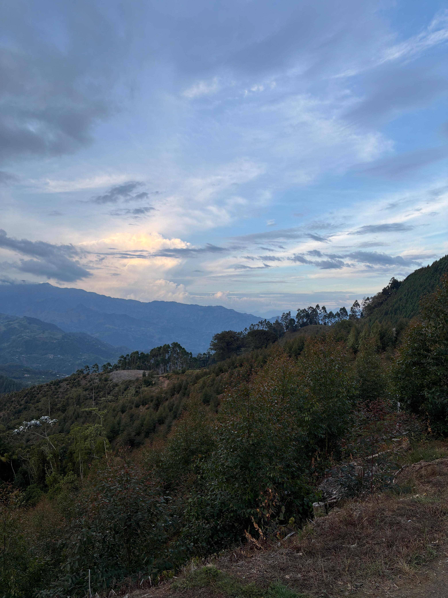
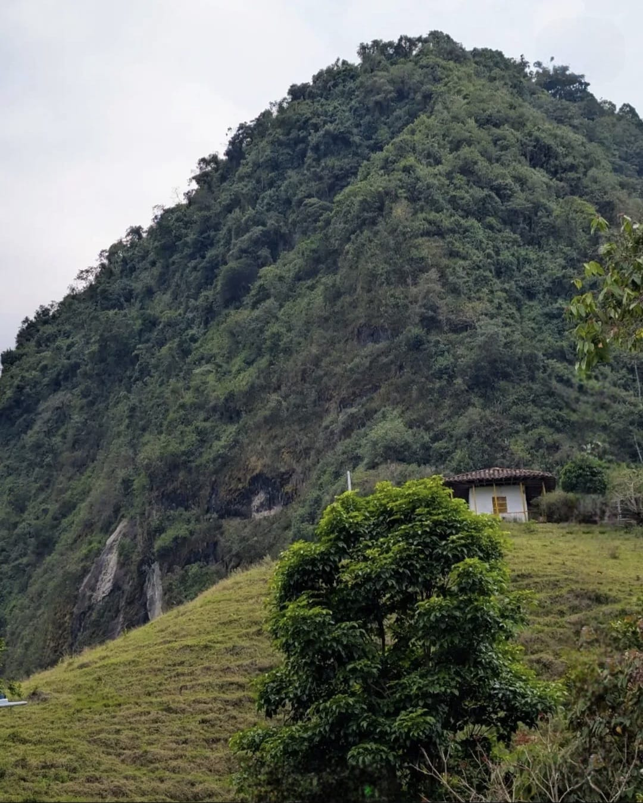
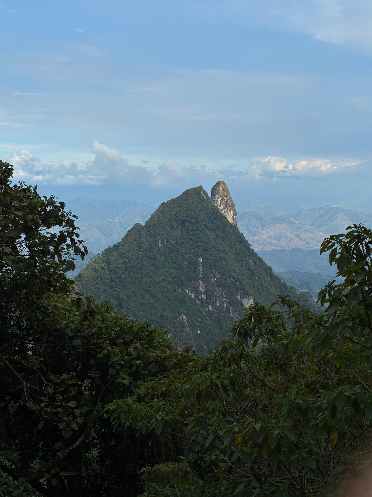

Miradores y Senderos
Los mejores paisajes naturales para explorar a pie o en recorridos guiados.

Las Pineras
Las Pineras es un sendero ecológico ubicado en la vereda Pueblo Viejo

Cerro Ingrumá
Sitio sagrado y ancestral para las comunidades indígenas Umbra y Embera, con senderismo y vista panorámica.

Piedra del Condenado
Antigua ruta usada por los indígenas del resguardo Escopetera y Pirza para movilizarse por el territorio.
Aquí irá el mapa interactivo